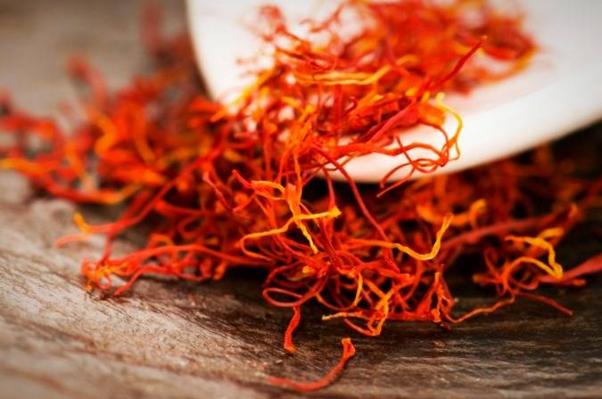

Untitled Document

جلوگیری از دیابت
عصاره زعفران پانکراس را از آسیب محافظت می کند و موجب بهبود حساسیت به انسولین در بدن می شود. با افزایش سطح انسولین و تقویت حساسیت به انسولین، زعفران یکی از بهترین ادویه ها برای جلوگیری از دیابت است.
درمان ورم
ورم یا ادم یک اصطلاح پزشکی برای تورم بدن است که در اثر تجمع آب در زیر پوست ایجاد می شود. از زعفران می توان برای درمان ورم استفاده کرد.
درمان آکنه
آکنه به عنوان یک عامل آزار دهنده در زیبایی پوست ، بر اثر عوامل مختلفی ایجاد می شود. آکنه در اثر عفونت لایه زیرین پوست و انسداد منافذ رخ می دهد. فقط با استفاده از زعفران می توان آکنه را درمان کرد. زعفران را با عسل مخلوط کنید، چند دقیقه روی پوست مالیده و سپس صورت را با آب ولرم بشویید.
روشن کردن پوست
زعفران نه تنها باعث درمان آکنه می شود، بلکه حاوی آنتی اکسیدان زیادی است که منجر به روشن کردن و رفع لکه های پوست می شود. مقداری زعفران را با شیر مخلوط کرده و آنرا به صورت خود بمالید. بعد از چند دقیقه آن را با آب بشویید.
از بین بردن جای جوش
با تهیه ماسک زعفران می توان جای جوش را رفع نمود. کافی است یک قاشق چای خوری زعفران را با یک قاشق غذاخوری ماست و یا خامه ترش به همراه یک قاشق چای خوری عسل ترکیب کرده و روی پوست صورت و گردن خد بمالید.پس از نیم ساعت ، پوست خود را با آب ولرم شستشو دهید.
بهبود ام اس
کروسین موجود در زعفران از سلول های مغزی در ام اس، محافظت می کند. این ماده در واقع از آسیب دیدن سلول های تولید کننده غلاف میلین در مغز، جلوگیری می نماید. میلین لایه ای است که مانند یک عایق محافظ در اطراف نورون ها (سلول های مغزی) عمل می کند. بر اساس مطالعات محققان،کروسین در زعفران، تورم و فشار سلولی را که منجر به از بین رفتن عایق و تصلب شرائین در مغز می شود را تا اندازه بسیاری کاهش می دهد.
درمان آسم و سرفه
زعفران بیشتر به عنوان محافظ دستگاه تنفسی شناخته می شود. ماده مؤثر فعال زعفران مانند کروسین و کائمپرفرول می تواند حمله آسم و همچنین سرفه را به میزان قابل توجهی کاهش دهد